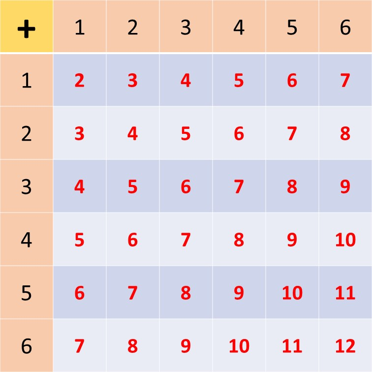

Indicators: B7.4.2.1.1
Demonstrate understanding of likelihood of a single outcome occurring by providing examples of events that are impossible, possible, or certain from personal contexts.
Sometimes we want to find the likelihood that an event will happen. The concept in Mathematics that helps us to determine this chance of an event happening is called Probability.
In this lesson, we learn about events, types of events, that is certain events, uncertain or impossible events and possible events.
Event
An event is a cause, happening or experiment that produces an outcome or a number of outcomes.
Examples of events are:
1. The event of tossing a coin.
2. The event of tossing a dice.
3. The event of playing a football game.
4. The event that it will rain.
5. The event that you will go to school tomorrow.
Certain Events
A certain event is an event that will always, or definitely, occur. Certain events have a probability of 1.
Examples of certain events are:
1. The event that Ghana will continue to be an African country tomorrow.
2. The event that the number 2 will still be called a prime number in two weeks from now.
3. The event of rolling a die and getting a number between 1 and 6.
Impossible Events
Impossible events are events that cannot occur. They have a probability of zero (0).
Examples of impossible events are:
1. The event that a dog will fly tomorrow.
2. The event of rolling a die and getting a number that is greater than 6.
3. The event that a new-born baby will be able to run the following day.
4. The event that when a coin is tossed, neither a head nor a tail appears.
Possible Events
Possible events on the other hand are events that may or may not occur. Their probability lies between 0 (impossible) and 1 (certain). For this reason, they are mostly expressed as fractions \((\frac{a}{b})\).
--Remember, that fractions can also be expressed as percentages, decimals, and ratios.
Examples of possible events are:
1. Rolling a die and getting an even number.
2. The event that, a coin, when tossed lands heads side up.
3. The event that it will rain tomorrow.
4. The event that Manchester United will beat Real Madrid in a cup final.
Take Away
Probability of events range from 0 (impossible) to 1 (certain), with the values in between representing possible events.
Try Work
Using impossible, possible, or certain, describe each of the outcomes below:
1. A coin lands heads side up.
2. The day after Monday will be Tuesday.
3. A new-born baby will be a girl.
4. It will rain in Winneba in the first week of January
Indicators: B7.4.2.1.2
Classify the likelihood of a single outcome occurring in a probability experiment as impossible, possible, or certain
Consider the event of throwing a die. A die has six sides with numbers 1, 2, 3, 4, 5 and 6 each on a side. We call each of these numbers a possible outcome in the event of of throwing the die.
This is because, when the die is thrown, only one of the numbers appear at the top when it falls. So there are 6 possible outcomes in the event of throwing a die. And out of these 6 possible outcomes only 1 of the outcomes is successful.
We say that the probability of getting this 1 successful outcome is \(\frac{1}{6}\)
Try Work
Using the words impossible, possible and certain, describe each of the outcomes below when a fair die is thrown.
1. Obtaining the number 1
2. Obtaining the number 7
3. Obtaining the number 4
The number 1 is one of the 6 possible outcomes when a fair die is thrown, hence it also has a probability of \(\frac{1}{6}\).
That is,
Probability(Obtaining 1) = \(\frac{1 \ outcome}{6 \ possible \ outcomes} \)
\( \hspace{4.5cm} \implies P(1) = \frac{1}{6} \)
Can you guess the probability of obtaining the number 7?
Remember, in throwing a die, your set of possible outcomes is {1, 2, 3, 4, 5, 6}. Meaning the event of obtaining the number 7 is an impossible event, hence has a probability of zero (0).
The event of obtaining the number 4 is also a possible event, and has a probability of \(\frac{1}{6}\).
That is,
Probability(obtaining 4) = \(\frac{1}{6}\)
Throwing 2 dice
Now, say you had two dice in your hands and you decided to throw them at the same time, or one after another.
Describe the following after throwing the dice using words like impossible, possible and certain.
1. Obtaining a total of 12
2. Obtaining a total of 2
3. Obtaining a total of 13
From the above table, you can see that when two dice are thrown, there is only one chance that a sum or total of twelve (12) can be obtained. Hence the outcome of obtaining a total of twelve (12) is possible, and
Probability(Obtaining a total of 12) = \(\frac{1\ outcome}{36 \ possible \ outcomes}\)
Probability(Obtaining a total of 2) = \(\frac{1}{36}\)
Probability(Obtaining a total of 13) = \(\frac{0\ outcomes}{36 \ possible \ outcomes}\)
\(\implies\) Probability(obtaining a total of 13) = 0
Indicators: B7.4.2.1.3
Calculate the probability of the event and express the probability as fractions, decimals, percentages and/or ratios.
We have learnt that since probabilities are often written as fractions we can therefore change them to decimals, percentages, ratios. Consider the event of throwing a fair die once and complete the table below: